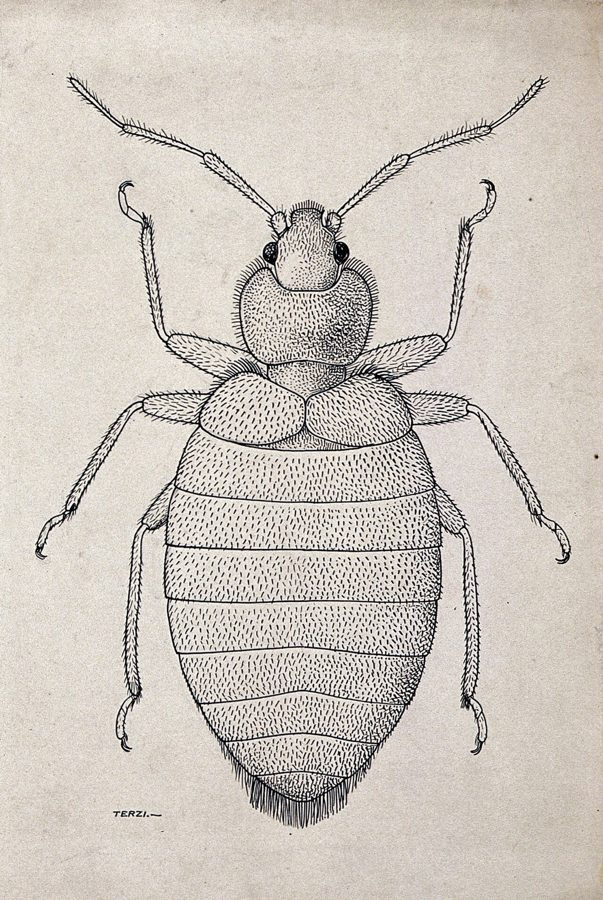

खटमलTropical Bed Bug
Cimex hemipterus · Cimicidae · INS-0094

- Scientific name
- Cimex hemipterus (Fabricius, 1803)
- Family
- Cimicidae
- Hindi
- खटमल
- Local names
- khatmal, khatmal keeda, khatmal kida, bed bug
- Status here
- native
- Movement
- Resident, here all year
- IUCN
- not evaluated
- Review
- audited and independently read
When to look कब देखें
Present all year.
Uses and possibilities उपयोग और संभावनाएँ
Drawn from the documented uses in the profile below, where each is labelled traditional, current or a research lead. All uses →
खटमल / Tropical Bed Bug
Cimex hemipterus (Fabricius, 1803) — Cimicidae
खटमल — यह एक लाल-भूरे रंग की छोटी कीट है जो बिस्तर, गद्दे और तकिए के अंदर छिपी रहती है। रात को जब आप सोते हैं, यह आपके शरीर से खून चूसती है। दिन में यह बिस्तर की सिलवटों, दरारों और फर्नीचर के पीछे छिपी रहती है। इसका काटना खुजली वाला, दर्दनाक होता है और शरीर पर लाल निशान छोड़ता है। दुनिया भर में लोग सदियों से इसी से परेशान हैं, पर पूर्वी उत्तर प्रदेश में यह आजकल ज़्यादा आम हो गया है।
Quick Identification त्वरित पहचान
| Feature | Description |
|---|---|
| Size | Small; body length 4–5 mm; nymphs 1–3 mm |
| Colour | Flat, reddish-brown, darker after feeding |
| Body shape | Oval, flattened; lacks wings; cannot fly |
| Head | Small, with simple antennae |
| Legs | Six legs; moderately long |
| Mouthparts | Elongate proboscis (feeding tube) that folds under the body |
| Odour | Musty smell from scent glands when crushed |
Field tip: Check the seams of mattresses, the frame of a bed, cracks in walls near bedside, and the backs of bedside furniture. Live bugs are dark red after feeding and straw-coloured when unfed. Faecal spots (dark dots) on fabric are telltale signs. Fresh bites appear as small, red, itchy bumps in lines or clusters on the body.
हिंदी — कैसे पहचानें: बिस्तर की सिलवटों में, गद्दे के अंदर छिपी होती है। लाल-भूरी, चपटी कीट। रात को काटती है, दिन छिपी रहती है।
Morphology आकारिकी
Biometrics:
| Measurement | Range |
|---|---|
| Adult body length | 4.0–5.0 mm |
| Adult body width | 2.5–3.5 mm |
| Nymph (1st instar) | 1.0–1.5 mm |
| Unfed weight | 0.8–1.0 mg |
| Engorged weight | 2.0–3.0 mg |
Structure: Flattened, oval body, resembling a small disc. The head is small, with a short labium (lower lip) that folds beneath the body when not feeding. The proboscis is needle-like, folded under the head. The thorax is broader than the head. The abdomen is large, segmented, with a leathery texture. Legs are relatively long for the body size, allowing rapid movement. Wings are completely absent (wingless). The integument (outer skin) is smooth and dark reddish-brown, but becomes dark red or nearly black shortly after feeding on blood.
Dimorphism: Females are slightly larger than males. Males have a pointed posterior abdomen; females have a rounded posterior.
Behaviour & Ecology व्यवहार और पारिस्थितिकी
A strictly nocturnal, anthropophilic insect living exclusively in human habitats. Bed bugs are attracted to the warmth and carbon dioxide exhaled by sleeping humans. Females lay eggs in sheltered cracks and crevices. Nymphs undergo five instars before reaching adulthood, requiring a blood meal after each molt. Adults can survive 6–12 months without feeding, allowing them to persist even in temporarily abandoned dwellings. They do not carry pathogens and do not transmit disease, but their bites cause itching, discomfort, and psychological distress.
Infestations spread through direct contact with infested bedding, furniture, and luggage. Single fertilized females can establish a new infestation.
हिंदी: घर-दर-घर यात्रियों के सामान और बिस्तर में जाती है। एक मादा से पूरा घर खटमलों से भर जाता है।
Life Cycle / Phenology जीवन चक्र
| Stage | Duration |
|---|---|
| Egg | 6–10 days |
| Nymph instar 1 | 3–5 days |
| Nymph instar 2 | 3–5 days |
| Nymph instar 3 | 3–5 days |
| Nymph instar 4 | 3–5 days |
| Nymph instar 5 | 3–5 days |
| Adult lifespan | 4–6 months (up to 1 year) |
| Egg-to-adult | 5–14 weeks in warm conditions |
Temperature dependence: Development is rapid at 25–30°C but slowed significantly in cool conditions. Reproductive diapause (dormancy) is not observed; continuous reproduction occurs year-round indoors.
Host Plants or Prey आहार
Host:
- Human blood (exclusive source)
Feeding: Females and nymphs feed on blood. Males also feed but do so less frequently and produce fewer offspring. One blood meal lasts 3–10 days.
Predators / Natural Enemies शत्रु
- Predatory insects: Pseudoscorpions, some Phymata (ambush bugs), and parasitoid wasps.
- Ants: Fire ants (Solenopsis) and other ants may prey on eggs and nymphs.
- Parasites: Mites and parasitoid flies are occasionally found on adults.
Agricultural / Human Relevance कृषि प्रासंगिकता
Household pest and nuisance. Tropical Bed Bugs cause significant discomfort through their bites, which produce itchy, allergic reactions lasting days. The psychological impact of an infestation — the knowledge that an animal is feeding on you while you sleep — often causes insomnia and anxiety. Unlike some other blood-feeding insects, Cimex hemipterus does not transmit pathogens; however, secondary infections from scratching are possible.
Management. Effective control requires integrated approaches: (1) inspection and detection of infestations; (2) thorough washing of bedding in hot water; (3) vacuuming of mattresses and furniture; (4) sealing cracks and crevices; (5) application of insecticides (pyrethroids or neonicotinoids) to surfaces where bugs hide; (6) heat treatment of infested articles (60°C for 90 minutes kills all stages). Complete removal is essential, as chemical resistance is increasing worldwide.
हिंदी: काटते हैं, खुजली होती है, लेकिन बीमारी नहीं फैलाते। नियंत्रण: गर्म पानी से बिस्तर धोना, बिस्तर के सिलवटों में दवा लगाना, दरारें बंद करना।
Expected Locally स्थानीय रूप से अपेक्षित
Not a field record. Written from published accounts for eastern Uttar Pradesh. No confirmed local sighting yet — if you have seen it, that is what the atlas needs.
अभी तक स्थानीय पुष्टि नहीं। यह विवरण प्रकाशित स्रोतों से है, किसी अवलोकन से नहीं।
Expected in bedrooms throughout Basti district, particularly in rooms with multiple occupants or frequent travellers. Hotels, guest houses, and temporary shelters are common sources of infestations. The presence of bite marks in clusters on exposed skin (arms, legs, face) of sleeping occupants, especially arranged in lines ("breakfast, lunch, and dinner"), is a sign of infestation. A record would be a specimen collected from bedding with place and date, or a detailed photograph of the typical bite pattern.
Distribution वितरण
Global range: Tropical and subtropical regions worldwide; now expanding northward in temperate zones.
In India: Widespread in all states, particularly in hotels, dormitories, and urban homes.
In Uttar Pradesh: Present in all districts; particularly abundant in urban and semi-urban areas.
In Basti district / eastern UP: Present in residential areas; expected to increase with tourism and travel.
Research Questions शोध प्रश्न
- How long can tropical bed bugs survive without feeding in a sealed room? / खटमल बिना खून के कितने दिन जीवित रह सकती है? — Maintain bed bugs without hosts and record survival times.
- Does washing bedding in cold water (versus hot water) effectively remove bed bug eggs? — Compare infestations before and after cold and hot water washing.
- What is the resistance rate of local Cimex hemipterus populations to pyrethroid insecticides? — Test susceptibility using bioassays.
- Can heat treatment of infested furniture at 60°C for varying durations eliminate all bed bug life stages? — Expose infested articles to controlled heat.
- Which public spaces in the district (hotels, schools, health centers) have documented bed bug infestations? — Surveys and interviews with facility managers.
Similar Species मिलती-जुलती प्रजातियाँ
| Species | How to tell apart | हिंदी |
|---|---|---|
| Cimex lectularius (Common Bed Bug) | Nearly identical but smaller on average; temperate climate preference; now rare in India | बहुत छोटा, ठंड में रहता है |
| Dust mites | Much smaller (0.2–0.3 mm); not visible to the naked eye; do not cause visible bites | इतने छोटे कि नज़र नहीं आते |
| Young ticks | Larger (1–2 mm); have eight legs instead of six; different habitats (outdoors, animals) | आठ पैर, बाहर रहते हैं |
Field rule: Flat, reddish-brown insect (4–5 mm) found in bedding; bites cause clusters of itchy red bumps: Tropical Bed Bug.
Taxonomy & Classification वर्गीकरण
Original description. Fabricius described the Tropical Bed Bug as Acanthia hemiptera in 1803 in Systema Antliatorum (p. 486). The type locality was East Indies. It was later transferred to the genus Cimex. The genus name Cimex is from Latin, meaning "bug"; hemipterus refers to its partial wings (actually winglessness, but the term predates this discovery).
Subspecies. Monotypic. However, genetic studies have revealed cryptic variation, and some authors propose subspecies, though this is not yet formalized.
Family and order placement. Order Hemiptera (true bugs), family Cimicidae (bed bugs and allied parasitic bugs).
Phylogenetic notes. Cimex hemipterus likely diverged from C. lectularius in tropical Africa and subsequently dispersed via human trade networks.
IUCN status rationale. Not evaluated. A household pest of global concern but not under any conservation consideration.
Photo Gallery फोटो गैलरी
Photos needed आवश्यक फोटो
- [ ] Adult bed bug on a surface showing reddish-brown color (खटमल)
- [ ] Bite marks on skin showing characteristic clusters (काटे के निशान)
- [ ] Bed bug nymphs and fecal spots on bedding (बच्चे और गंदगी)
No photos yet — add field photos to media/species/tropical_bed_bug/ and run node scripts/sync_photos.js.
References संदर्भ
- Fabricius, J.C. (1803). Systema Antliatorum secundum ordines, familias, genera, species. p. 486. Brunsvigae. [original description as Acanthia hemiptera]
- Bingham, C.T. (1903). The Fauna of British India, including Ceylon and Burma. Rhynchota. Vol. 4. Taylor and Francis, London.
- Usinger, R.L. (1966). Monograph of Cimicidae (Hemiptera-Heteroptera). Entomological Society of America, College Park, Maryland.
- Boase, C. (2001). Bedbugs and their control. Journal of Environmental Health Research 1: 45–51.
- Zhu, F., Wigginton, J., Romero, A., Moore, A., Ferguson, K., Palli, R., ... & Scharf, M.E. (2010). Widespread distribution of knockdown resistance mutations in the bed bug, Cimex lectularius (Hemiptera: Cimicidae), across the United States. Archives of Insect Biochemistry and Physiology 73: 245–257.
- GBIF Occurrence Data — Cimex hemipterus, India (2026).
Source file: species/fauna/insects/tropical_bed_bug.md